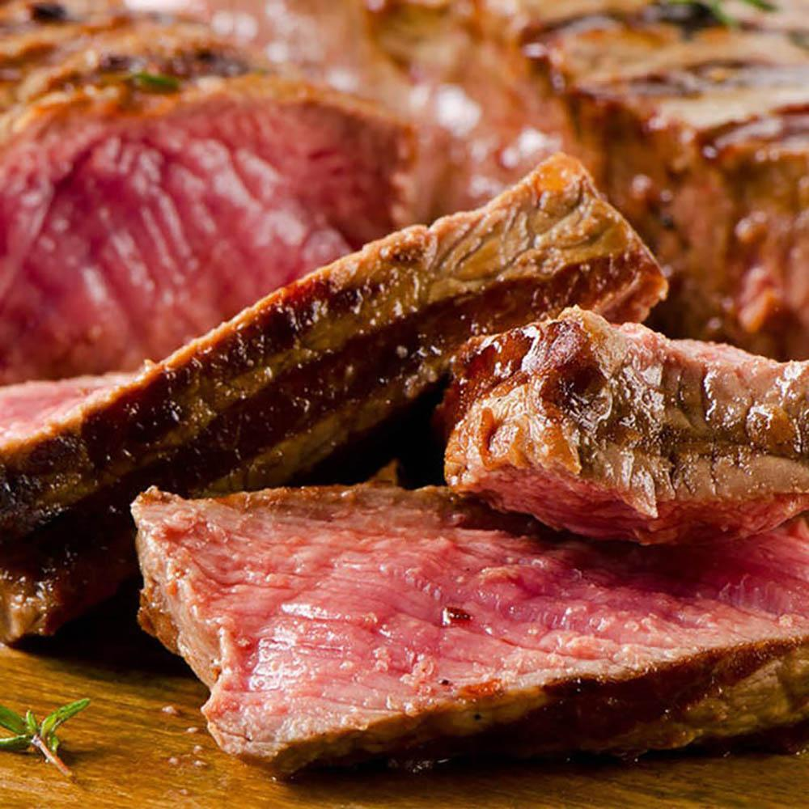

戰斧牛排
菲力牛排
濕式熟成牛排
乾式熟成牛排
濕式熟成牛排
濕式熟成牛排就是在大型超市購買到的真空包牛排，將牛肉分切、利用真空包裝技術將新鮮冷藏牛肉包膜塑型，在冷藏運送的過程中，以牛肉本身天然酵素熟成，達到軟嫩多汁的效果。目前台灣進口的牛肉多採濕式熟成。
優點是損耗較低，當牛肉在「熟成」進行時，真空包裝取代了在乾式熟成過程中因風乾而變硬的硬殼，讓肉質達到軟嫩多汁的效果，還可避免熟成過程的損耗，因此濕式熟成牛肉的價格向來比較經濟實惠，較為一般消費者所接受。
